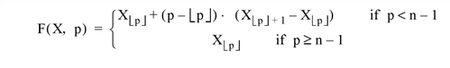
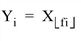
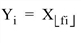

The REBIN function resizes a vector or array to dimensions given by the parameters Di. The supplied dimensions must be integral multiples or factors of the original dimension. The expansion or compression of each dimension is independent of the others, so that each dimension can be expanded or compressed by a different value.
If the dimensions of the desired result are not integer multiples of the original dimensions, use the CONGRID function.
Result = REBIN( Array, D1[, ..., D8] [, /SAMPLE] )
Returns the resized array or vector of the specified dimensions.
The array to be resampled. Array can be of any basic type except complex or string.
Either an array or a series of scalar expressions specifying the dimensions of the result. If a single argument is specified, it can be either a scalar expression or an array of up to eight elements. If multiple arguments are specified, they must all be scalar expressions. Up to eight dimensions can be specified.
Note: The dimensions of the resulting resampled array must be integer multiples or factors of the corresponding original dimensions.
Normally, REBIN uses bilinear interpolation when magnifying and neighborhood averaging when minifying. Set the SAMPLE keyword to use nearest neighbor sampling for both magnification and minification. Bilinear interpolation gives higher quality results but requires more time.
Assume the original vector X has n elements and the result is to have m elements.
Let f = n/m, the ratio of the size of the original vector, X to the size of the result. 1/f must be an integer if n < m (expansion). f must be an integer if compressing, (n > m). The various resizing options can be described as:
| • | Expansion, n < m, SAMPLE = 0: Yi = F(X, f •i) i = 0, 1, ... , m-1 |
The linear interpolation function, F(X, p) that interpolates X at location p, is defined as:

| • | Expansion, n < m, SAMPLE = 1: |

| • | Compression, n > m, SAMPLE = 0: |
| • | Compression, n > m, SAMPLE = 1: |

| • | No change, n = m: Yi = Xi |
When expanding an array, REBIN interpolates, it never extrapolates. Each of the n-1 intervals in the n-element input array produces m/n interpolates in the m-element output array. The last m/n points of the result are obtained by duplicating element n-1 of the input array because their interpolates would lie outside the input array.
For example
; A four point vector:
A = [0, 10, 20, 30]
; Expand by a factor of 3:
B = REBIN(A, 12)
PRINT, B
IDL prints:
0 3 6 10 13 16 20 23 26 30 30 30
Note that the last element is repeated three times. If this effect is undesirable, use the INTERPOLATE function. For example, to produce 12 equally spaced interpolates from the interval 0 to 30:
B = INTERPOLATE(A, 3./11. * FINDGEN(12))
PRINT, B
IDL prints:
0 2 5 8 10 13 16 19 21 24 27 30
Here, the sampling ratio is (n - 1)/(m - 1).
Create and display a simple image by entering:
D = SIN(DIST(50)/4) & TVSCL, D
Resize the image to be 5 times its original size and display the result by entering:
D = REBIN(D, 250, 250) & TVSCL, D
|
Original |
Introduced |